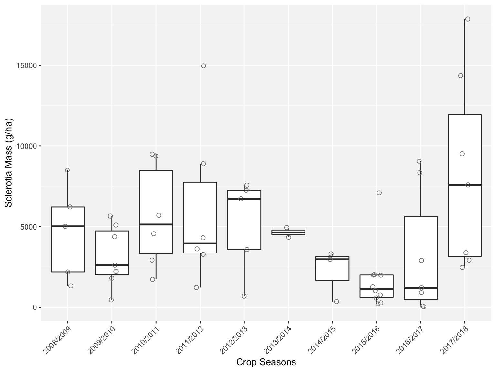
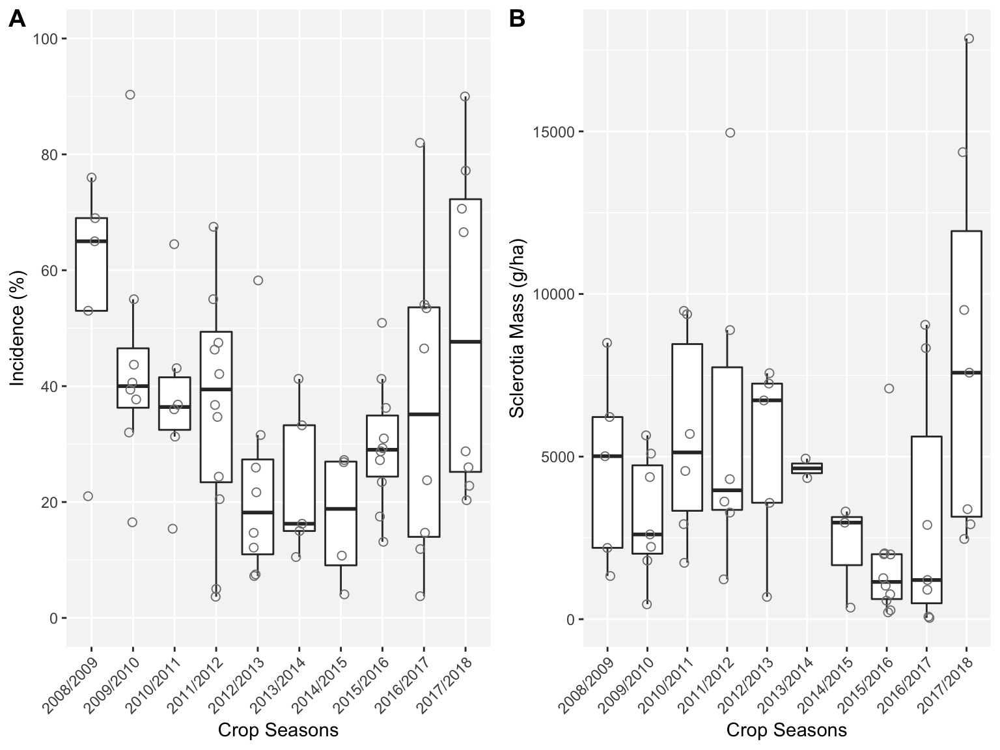
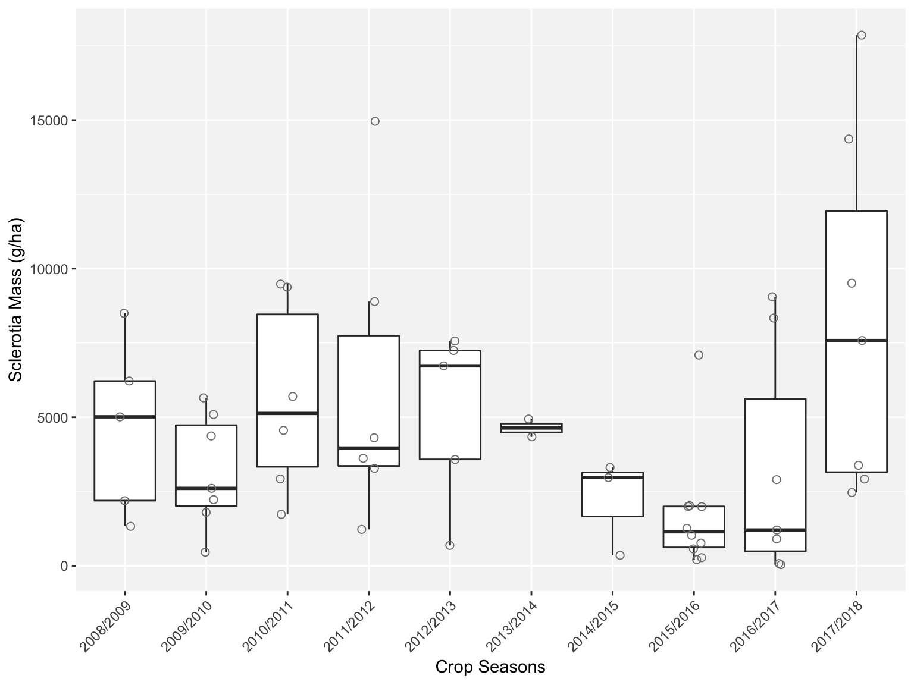
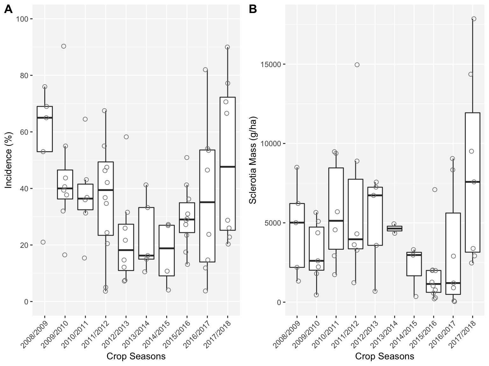
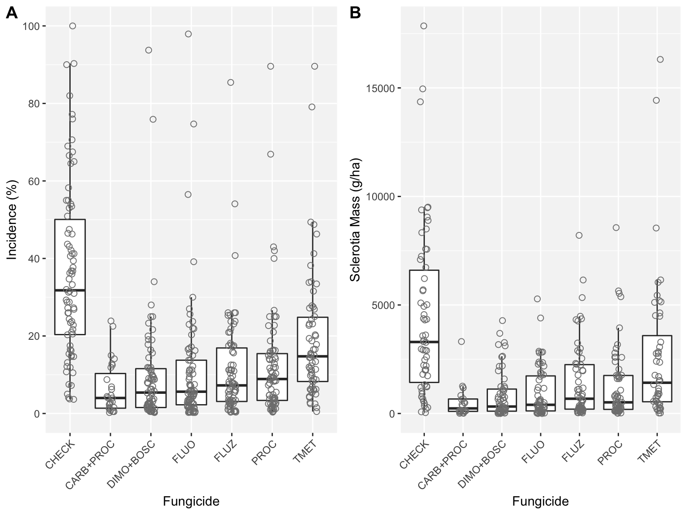
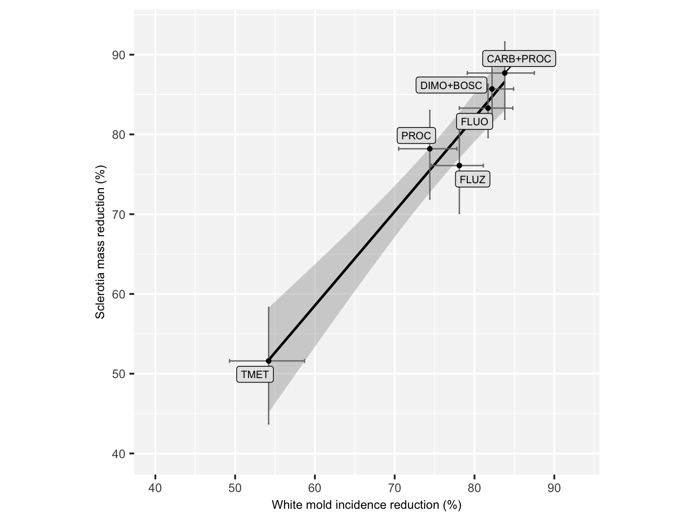

Plots
knitr::opts_chunk$set(fig.width=12, fig.height=8, fig.path='Figures/',
echo=FALSE, warning=FALSE, message=FALSE)Here we show the scripts that produce the publication-ready plots for the article. There is a hidden script (see the Rmd file) to prepare the data for the plots including variable creation and transformation.
Fig 1 Map
## OGR data source with driver: ESRI Shapefile
## Source: "/Users/emersondelponte/Documents/github/paper-fungicides-whitemold/data/shape-files-BRA/BRA_adm1.shp", layer: "BRA_adm1"
## with 27 features
## It has 16 fields
Fig 3 Boxp disease per season
 

Fig 4 Box disease per fungicide

Fig 5 Scatter disease variables

Fig 6 Box yield season and fungicide

Fig 7 Scatter yield x disease


Fig 8 tile risk categories
Fig 1 Supplement